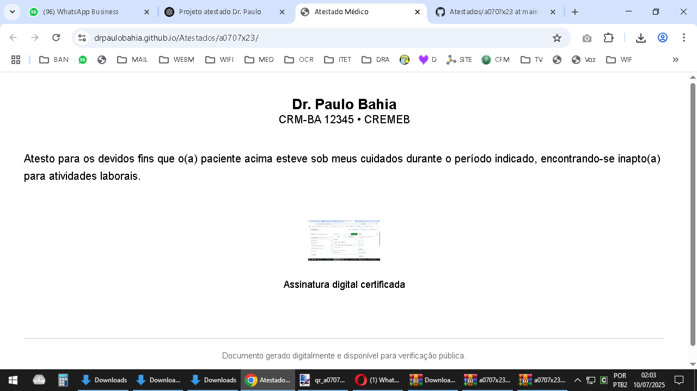

Atesto para os devidos fins que o(a) paciente acima esteve sob meus cuidados durante o período indicado, encontrando-se inapto(a) para atividades laborais.

Assinatura digital certificada
Documento gerado digitalmente e disponível para verificação pública.